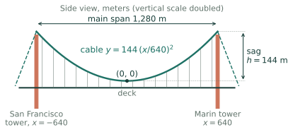
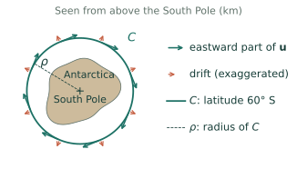
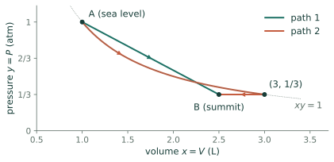
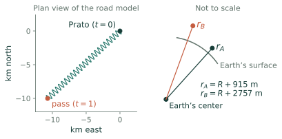

\(\int_C\nabla f\cdot d\mathbf r=f(\mathbf c(b))-f(\mathbf c(a))\) for any path \(C\) from \(\mathbf c(a)\) to \(\mathbf c(b)\)
If \((P,Q)=\nabla f\), then \(\partial P/\partial y=\partial Q/\partial x\); the converse holds on a domain with no holes
Entering answers
Type numbers or formulas: fractions, decimals, pi, e, sqrt(...), sin(...), cos(...), exp(...), log(...). Use ^ for powers and radians for angles; separate vector components with commas.
Any equivalent form is accepted: 3/2, 1.5, and 6/4 are all the same answer, and so are (4/3)pi r^3 and 4 pi r^3/3.
Decimals must be correct to two decimal places (answers smaller than 0.1 need two significant digits). Exact forms such as 6pi sqrt(37) are always fine.
LaTeX such as \frac{1}{2}, \sqrt{2}, \pi, and \phi also works. A potential function may differ from ours by a constant. Units are shown beside each box.
Hints and solutions are built into the page, and nothing you type is sent anywhere: your answers and notes stay in this browser. This is an ungraded practice site.
Each of the Golden Gate Bridge’s two main cables is a bundle of 27,572 steel wires. Between the two towers, 1,280 m apart, each cable hangs in a smooth curve. Its sag is the drop from where it meets the towers to its lowest point at midspan. Because the cable curves, it is longer than the span, and its weight depends on that length. How long is one cable between the towers, how much does that stretch of cable weigh, and how high above its lowest point does it balance?
Building the model
1From the real world
Main span (tower to tower): \(1280\) m, published
Half-span: \(640\) m, half the published main span
Maximum sag of the main cable: \(h=144\) m, published
Cable weight: \(48.7\) kN per horizontal meter, published
Diameter of one main cable, with wrapping: \(0.92\) m, published
The main-span cable hangs as a parabola, lowest at midspan. A cable carrying an evenly spread deck load hangs very nearly in this shape
The weight per meter of cable is constant, \(\lambda=48.7\) kN/m. This matches the published value at midspan, where the cable is horizontal; near the towers the two readings differ by up to about 10%
The cable is a curve: its 0.92 m thickness is ignored, which is fair because it is tiny next to the 1,280 m span
3So the model is
Coordinates in meters, origin at the cable’s lowest point: \(x\) is the horizontal distance from midspan and \(y\) the height above the lowest point. Cable: \(y=144\,(x/640)^2\), \(-640\le x\le640\)
\(ds\) (m): the length of a short piece of cable. \(\lambda\) (kN/m): the weight of one meter of cable
Weight (kN) and centroid height (m): \(W=\int_C\lambda\,ds\), \(\ \bar y=\dfrac{\int_C y\,ds}{\int_C ds}\), the height at which the cable would balance

The model: the main cable as the parabola \(y=144\,(x/640)^2\) between the towers at \(x=-640\) and \(x=640\), with its lowest point at the origin and sag \(h=144\) m. The vertical scale is doubled.
Watch
A short animated history of how the Golden Gate Bridge and its suspension cables were designed and built, the real structure behind the parabolic cable model.
Videos load from YouTube only when you press play.
First, on paper
With your group, on paper or a shared whiteboard, work down this list before typing any answers. Items marked “Before (b)” set up that part; “After (c)” items check it.
Sketch the cable for \(-640\le x\le640\) and mark where it is flat and where it is steepest: where does one meter of span hold the least cable, and where the most? Parametrize it as \(\mathbf c(t)=(t,y(t))\) and give its \(t\)-interval.
Check that \(\Psi(u)=\big(k\sinh u,\ \tfrac k2\sinh^2u\big)\), \(k=12800/9\) m, traces the same curve. Give its \(u\)-interval and show \(\|\Psi^{\prime}(u)\|=k\cosh^2u\).
Parametrize the reversed cable, from the Marin tower to the San Francisco tower, and explain why all three parametrizations give the same length and the same \(\int_C y\,ds\).
Predict before (b): is the cable a few meters, tens of meters, or hundreds of meters longer than the 1,280 m span?
After (b): estimate the weight \(\int_C\lambda\,ds\) of the main-span cable, and explain why \(\int\lambda\,dx\) would underestimate it.
After (c): the flat region between the cable and the line joining its two tops has centroid height \(3h/5=86.4\) m. Explain why the cable’s centroid is so much lower.
Whiteboard kit ↓One light image with this problem’s figure, model equations, checklist, and parts (a)–(c). Paste it, or crop pieces of it, onto your group’s shared whiteboard.
aEnter the speed \(\|\mathbf c^{\prime}(t)\|\) of \(\mathbf c(t)=(t,\,9t^2/25600)\) as a function of \(t\).
A step in the right direction
The velocity \(\mathbf c^{\prime}(t)\) always moves 1 m to the right per unit of \(t\) and rises by \(9t/12800\), so the speed is the hypotenuse of the triangle on the right.
bFind the length \(L=\int_C ds\) of the main-span cable, from tower to tower, in meters to two decimal places.
A step in the right direction
\(L\) is the whole shaded area under the speed graph: the \(1\times1280\) m rectangle plus a thin sliver, thickest near the towers, where the cable is steepest.
cUsing part (b), find \(\bar y\), the height in meters of the cable’s centroid above its lowest point.
A step in the right direction
Each dot marks an equal length, and so an equal weight, of cable; \(\bar y=\int_C y\,ds/L\) is the average height of the dots, and their crowding near the towers lifts it a little above \(h/3=48\) m.
View full solution +
Follow the reasoning
Parametrization: with the origin at the cable’s lowest point, \(y=144(x/640)^2=9x^2/25600\), so \(\mathbf c(t)=(t,9t^2/25600)\), \(-640\le t\le640\). Then \(\mathbf c^{\prime}(t)=(1,9t/12800)\), and the speed is \(\sqrt{1+(9t/12800)^2}\). It grows from 1 at midspan to \(\sqrt{1.2025}\approx1.097\) at the towers, so one meter of span holds the least cable at midspan and the most at the towers.
Same curve, three parametrizations: the reversed cable \(\mathbf c_2(t)=(-t,9t^2/25600)\), \(-640\le t\le640\), has the same speed at each point, so every integral with respect to \(ds\) is unchanged. For \(\Psi\), \(y=\tfrac k2\sinh^2u=(k\sinh u)^2/(2k)\) and \(2k=25600/9\), so \(\Psi\) traces the same parabola for \(|\sinh u|\le9/20\), that is, for \(|u|\le U=\operatorname{arcsinh}(9/20)\). Its velocity \(\Psi^{\prime}=(k\cosh u,k\sinh u\cosh u)\) has length \(k\cosh u\sqrt{1+\sinh^2u}=k\cosh^2u\). Each parametrization traces the cable exactly once, so \(ds\) is the same arc-length element in all three.
Length: \[L=k\int_{-U}^{U}\cosh^2u\,du=k\,(U+\sinh U\cosh U)\approx1321.97\text{ m},\] about 42 m (3%) more than the 1,280 m span. So the prediction’s answer is tens of meters, not hundreds, because the cable is nearly flat over most of the span.
Weight: \(\int_C\lambda\,ds=48.7\times1321.97\approx64{,}380\) kN, about 6,560 t. The estimate \(\int\lambda\,dx=48.7\times1280\approx62{,}340\) kN is too small because \(dx<ds\) wherever the cable slopes, so it misses the extra length near the towers.The weight per horizontal meter, \(\lambda\,ds/dx\), grows from \(48.7\) kN/m at midspan to \(53.4\) kN/m at the towers; \(\int\lambda\,dx\) counts only the rectangle and misses the orange sliver.
Centroid: \[\int_C y\,ds=\frac{k^2}{8}\int_{-U}^{U}\sinh^2(2u)\,du=\frac{k^2}{8}\Big(\frac{\sinh4U}{4}-U\Big)\approx65047\text{ m}^2,\] so \(\bar y\approx65047/1321.97\approx49.20\) m. By symmetry, \(\bar x=0\).
Why the cable’s centroid is low: the flat region is widest at the top, so most of its area sits high and its centroid is at \(3h/5=86.4\) m. The cable’s weight is spread almost evenly in \(x\), and most of the span is low, so its centroid is near the average height \(h/3=48\) m.The flat region is widest at the top, so its centroid sits at \(3h/5=86.4\) m; the cable’s weight is spread almost evenly in \(x\), so \(\bar y\approx49.20\) m sits near \(h/3=48\) m.
Reconciliation: one main-span cable is about 1,322 m long, weighs about 64,400 kN, and balances about 49 m above its lowest point. All three are positive and sensible: \(L\) exceeds the span, as it must since \(ds\ge dx\), and it is more than half of the published 2,332 m length of the whole cable, which runs from anchorage to anchorage. The assumption that matters most is how to read the published 48.7 kN/m. Per meter of cable it gives 64,380 kN; per horizontal meter it gives 62,340 kN. The two differ by only 3%, so the weight is known to about that accuracy.
Final answers
a.\(\sqrt{\frac{81 t^{2}}{163840000} + 1}\)
b.\(1321.97431941635\) m
c.\(49.2045532645424\) m
Discussion
No. The weight per horizontal meter is \(\lambda\,ds/dx=\lambda\sqrt{1+(y^{\prime})^2}\). It equals \(\lambda\) only at midspan, where the cable is horizontal, and grows to about \(1.097\lambda\) at the towers, where the cable is steepest. (For a real suspension bridge it is the deck’s load per horizontal meter that is nearly constant, which is why the cable hangs as a parabola.)
Think it through
The source gives the cable’s weight per horizontal meter. If the weight per meter of cable is constant, is the weight per horizontal meter also constant? If not, where along the span is it largest?
Saved on this browser · Discussion prompt, not automatically graded
Problem 02Core
Sailing around Antarctica: with or against the current?
Photo: U.S. Coast Guard photo by Petty Officer 1st Class George Degener · Public domain · Wikimedia Commons
The Antarctic Circumpolar Current flows eastward all the way around Antarctica, driven by strong westerly winds (winds that blow from the west). A ship sailing around Antarctica can go east with the current or west against it. How strongly the water swirls around a closed loop is measured by its circulation: add up, all the way around the loop, the part of the water’s velocity that points along the loop. This is the line integral of the velocity around the loop. How large is the circulation around a voyage that circles Antarctica, how much time does riding the current save, and why does turning the ship around change some totals but not others?
Building the model
1From the real world
Average speed of the Antarctic Circumpolar Current: \(50\) cm/s, published; converted, \(1.8\) km/h
Range of speeds around Antarctica: about \(10\) to \(100\) cm/s, published
The current flows from west to east (the West Wind Drift)
The voyage follows latitude \(60^\circ\) S exactly, a circle centered on the pole. A real route need not
Along the voyage the current flows due east at its published average, \(1.8\) km/h. The real speed varies from place to place
The current also drifts north, away from the pole, at \(0.18\) km/h (0.05 m/s), a tenth of the eastward speed. This drift is a modeling choice, not a measurement; it shows which integrals notice it
3So the model is
Map: Earth seen from directly above the South Pole, origin at the pole, \(x,y\) in km. The \(60^\circ\) S circle appears at its true radius \(\rho=R\cos60^\circ=3185.5\) km
Surface current near the voyage, in km/h: \(\mathbf u(x,y)=\dfrac{1.8}{\rho}(y,\,-x)+\dfrac{0.18}{\rho}(x,\,y)\). The first term is the eastward current; the second is the drift
\(C\): the voyage circle \(x^2+y^2=\rho^2\)

Seen from directly above the South Pole: the voyage circle \(C\) of radius \(\rho=3185.5\) km, the eastward current (teal), and the northward drift (orange, exaggerated).
Watch
Shows how the Southern Ocean circulates around Antarctica, the eastward Antarctic Circumpolar Current that the problem models.
Explains line integrals of vector fields, which measure how much a field pushes along a path, as in the circulation of the current around the voyage circle.
Videos load from YouTube only when you press play.
First, on paper
With your group, on paper or a shared whiteboard, work down this list before typing any answers. Items marked “Before (b)” set up that part; “After (c)” items check it.
Sketch the map: Antarctica, the circle \(C\), and \(\mathbf u\) at eight points of \(C\). Show that the eastward part of \(\mathbf u\) turns clockwise and the drift points away from the pole. Mark the westward direction of travel.
Parametrize the westward voyage (counterclockwise on the map) and give its \(t\)-interval.
Predict before (b): from your sketch, not an integral, will the westward circulation be positive or negative? Explain why the drift adds nothing to \(\oint_C\mathbf u\cdot d\mathbf r\).
After (c): explain why reversing the voyage flips the sign of \(\oint_C\mathbf u\cdot d\mathbf r\) but not of \(\oint_C ds\) or \(\oint_C\|\mathbf u\|\,ds\).
At speed \(V\) through the water, a ship takes time \(\oint_C ds/(V+\mathbf u\cdot\mathbf T)\), with \(\mathbf T\) the unit tangent. Show that this is about \(L/V-(\oint_C\mathbf u\cdot d\mathbf r)/V^2\).
Estimate the hours an eastward voyage at \(V=20\) km/h saves over a westward one.
Whiteboard kit ↓One light image with this problem’s figure, model equations, checklist, and parts (a)–(c). Paste it, or crop pieces of it, onto your group’s shared whiteboard.
aFind the length \(L=\oint_C ds\) of the voyage around \(C\), in km.
A step in the right direction
Left: the \(60^\circ\) S circle has radius \(\rho=R\cos60^\circ\). Right: on \(\mathbf c(t)=(\rho\cos t,\rho\sin t)\), a small step \(dt\) covers the arc \(ds=\rho\,dt\).
bFind the circulation \(\oint_C\mathbf u\cdot d\mathbf r\), in km²/h, for the westward voyage, which runs counterclockwise on the map seen from above the South Pole.
A step in the right direction
Going west (counterclockwise on the map), \(\mathbf c^{\prime}(t)\) points against the eastward part of \(\mathbf u\) at every point of \(C\), while the drift is perpendicular to \(\mathbf c^{\prime}(t)\).
cFind \(\oint_C\|\mathbf u\|\,ds\), in km²/h, for the same westward voyage.
A step in the right direction
At every point of \(C\) the current is the same right triangle: \(1.8\) km/h along \(C\) and \(0.18\) km/h straight out, with \(\|\mathbf u\|\) as its hypotenuse, which never takes a sign.
View full solution +
Follow the reasoning
Orientation and length: seen from above the South Pole, Earth turns clockwise, so eastward is clockwise on this map. The westward voyage is \(\mathbf c(t)=(\rho\cos t,\rho\sin t)\), \(0\le t\le2\pi\), with \(\rho=6371\cos60^\circ=3185.5\) km. Its speed is \(\|\mathbf c^{\prime}(t)\|=\rho\), so \(L=\oint_C ds=2\pi\rho=6371\pi\approx20{,}015\) km.
Circulation: on the circle the drift \((0.18/\rho)(x,y)\) points straight out and \(\mathbf c^{\prime}(t)\) is tangent, so their dot product is zero at every point. The eastward part gives \(\frac{1.8}{\rho}(\rho\sin t,-\rho\cos t)\cdot(-\rho\sin t,\rho\cos t)=-1.8\rho\), so \[\oint_C\mathbf u\cdot d\mathbf r=-1.8(2\pi\rho)=-11467.8\pi\approx-36{,}027\text{ km}^2/\text{h}.\] It is negative, as the sketch predicts: going west, the ship moves against the current at every point. Going east (clockwise) gives \(+36{,}027\) km2/h, because reversing \(\mathbf c^{\prime}\) flips the sign of each dot product.Westward, the ship moves against the current at every point, so \(\mathbf u\cdot\mathbf T=-1.8\) km/h and the circulation is about \(-36{,}027\) km²/h; eastward, every sign flips.
Scalar integral: \(\|\mathbf u\|=\sqrt{1.8^2+0.18^2}=1.8\sqrt{1.01}\) km/h everywhere on the circle, so \(\oint_C\|\mathbf u\|\,ds=1.8\sqrt{1.01}\,(6371\pi)\approx36{,}207\) km2/h in either direction. The scalar integral counts the drift and ignores direction. The line integral ignores the drift and keeps direction.
Time saved: since \(1/(V+w)\approx1/V-w/V^2\) for small \(w=\mathbf u\cdot\mathbf T\), the time is about \(L/V-\frac{1}{V^2}\oint_C\mathbf u\cdot d\mathbf r\). The circulation is \(+36{,}027\) km2/h going east and \(-36{,}027\) km2/h going west, so going east saves about \(2(36{,}027)/20^2\approx180\) hours. The exact times \(L/(V\pm1.8)\) differ by about 182 hours. A ship that rides the current around Antarctica arrives roughly a week sooner than one that fights it.Exact voyage times \(L/(V\pm1.8)\) at \(V=20\) km/h: riding the current takes about 918 hours and fighting it about 1,100 hours, a difference of about 182 hours, or a week.
Reconciliation: the signs make sense. Going with the current gives a positive circulation and a shorter trip; going against it gives a negative circulation and a longer one. The voyage takes about \(L/V\approx1000\) hours, roughly six weeks, so a week is a real but modest saving. The approximation is good because the current is under a tenth of the ship’s speed. The assumption that matters most is the uniform 1.8 km/h: the time saved is proportional to the average current along the route, and the published speeds range from about 10 to 100 cm/s (0.36 to 3.6 km/h).
Final answers
a.\(6371 \pi\) km
b.\(- 11467.8 \pi\) km2/h
c.\(11524.996364789 \pi\) km2/h
Discussion
Because the line integral adds up only the part of the flow along the loop, with a sign. Flow that goes around the loop adds up, while flow that crosses the loop or reverses direction cancels. \(\oint\|\mathbf u\|\,ds\) counts every bit of motion as positive, so water drifting straight across the loop or sloshing back and forth would also make it large.
Think it through
The line integral \(\oint\mathbf u\cdot d\mathbf r\) has units of area per time (here km²/h). Why is it a natural measure of how strongly water swirls around a loop, while \(\oint\|\mathbf u\|\,ds\) is not?
Saved on this browser · Discussion prompt, not automatically graded
Carry a sealed snack bag from sea level to the top of Mount Everest. The outside air presses less on the way up, so in the model the air inside expands and the bag puffs up. In October 1981, Chris Pizzo of the American Medical Research Expedition to Everest measured the summit air pressure: only one third of sea-level pressure. On a pressure–volume diagram, each point is a state of the gas and each path is a process. Take the bag up by two different processes. Which totals depend on the path: the work (energy the air spends pushing the bag outward), the change in internal energy (energy stored in the motion of its molecules), or the heat (energy it absorbs from outside)?
Building the model
1From the real world
Summit pressure measured in October 1981: \(253\) mm Hg, published
One standard atmosphere: \(760\) mm Hg, by definition
Summit pressure in atmospheres: \(253/760=0.333\) atm, rounded to \(1/3\) in the model
At sea level the bag holds \(1\) L of air at \(1\) atm and \(300\) K (27 °C). These are round values, not measurements
At the summit the air is at \(1/3\) atm and \(250\) K (−23 °C). The bag is slack, so the pressure inside equals the pressure outside; this fails if the bag cannot stretch to its new volume
Air is an ideal diatomic gas, so \(PV/T\) stays constant. This is a good approximation for air at these pressures
3So the model is
Coordinates: volume \(x=V\) (L), pressure \(y=P\) (atm); energies in L·atm (1 L·atm \(=101.325\) J). Start A \(=(1,1)\); summit B \(=(2.5,\,1/3)\)
Work done by the air: \(W=\int_C y\,dx\), the line integral of the work field \((y,0)\). Heat absorbed: \(Q=\Delta U+W\)
Change in internal energy: \(\Delta U=\int_C\tfrac52y\,dx+\tfrac52x\,dy\), the line integral of the energy field \(\big(\tfrac52y,\tfrac52x\big)\)
Path 1: the straight segment from A to B. Path 2: along the isotherm \(xy=1\) (constant temperature) from A to \((3,1/3)\), then at constant pressure \(y=1/3\) to B

The two processes from A \(=(1,1)\) to B \(=(2.5,1/3)\), with volume \(x\) and pressure \(y\). Path 2 follows the isotherm \(xy=1\) to \((3,1/3)\), then the constant pressure \(y=1/3\) back to B. Arrowheads show the direction of travel.
Watch
Explains what low air pressure and thin air at the summit of Mount Everest do to the human body.
Videos load from YouTube only when you press play.
First, on paper
With your group, on paper or a shared whiteboard, work down this list before typing any answers. Items marked “Before (b)” set up that part; “After (c)” items check it.
Sketch both paths from A to B with arrows, shade the area under each down to \(y=0\), and mark the piece where \(x\) decreases, so \(y\,dx<0\). Predict before (a): which path does more work?
Parametrize both paths and give their intervals (path 2 has two pieces).
Compute the energy integral \(\int_C\tfrac52y\,dx+\tfrac52x\,dy\) directly along both paths.
Explain why unequal answers on two paths disprove path independence, while equal answers, as here, do not prove it.
Check the cross-partials of the work field \((y,0)\) and of the heat field \((\tfrac72y,\tfrac52x)\).
After (b): find the heat \(Q\) absorbed along each path.
Whiteboard kit ↓One light image with this problem’s figure, model equations, checklist, and parts (a)–(c). Paste it, or crop pieces of it, onto your group’s shared whiteboard.
aFind the work \(W=\int_C y\,dx\), in L·atm, done by the air along path 1, the straight segment from A to B.
A step in the right direction
Along path 1, \(x\) increases the whole way, so \(W=\int_C y\,dx\) is the area of the shaded trapezoid under the segment.
bFind the work \(W=\int_C y\,dx\), in L·atm, done by the air along path 2, from A to B.
A step in the right direction
Path 2 gives two signed areas: the area under the isotherm \(y=1/x\) from \(x=1\) to \(x=3\) counts \(+\), and the hatched strip counts \(-\), because there \(x\) decreases from \(3\) to \(2.5\).
cEnter a potential \(f(x,y)\), in L·atm, for the energy field \(\big(\tfrac52y,\ \tfrac52x\big)\).
A step in the right direction
On a line where \(y\) is fixed, \(\partial f/\partial x=\tfrac52y\) is a constant, so integrate it in \(x\); then fix the unknown \(g(y)\) by comparing \(\partial f/\partial y\) with \(\tfrac52x\).
View full solution +
Follow the reasoning
Parametrizations: path 1 is \(\mathbf c(t)=(1+1.5t,\,1-\tfrac23t)\), \(0\le t\le1\). Path 2 is \(\mathbf c(t)=(t,1/t)\), \(1\le t\le3\), then \(\mathbf c(t)=(3-0.5t,\,1/3)\), \(0\le t\le1\). Both start at A \(=(1,1)\) and end at B \(=(2.5,1/3)\).
Work: on path 1, \(W=\int_0^1(1-\tfrac23t)(1.5)\,dt=1\) L·atm. On path 2, \(W=\int_1^3\frac{dt}{t}+\int_0^1\tfrac13(-0.5)\,dt=\ln3-\tfrac16\approx0.932\) L·atm. Path 1 does more work, as the signed areas predict: the segment lies above the isotherm over most of the way, from \(x=1\) to \(x=2.25\), and the area path 2 gains beyond \(x=2.5\) is almost cancelled by its leftward piece. Different values with the same endpoints prove that \(\int y\,dx\) depends on the path. The cross-partials confirm it: \(\partial_y(y)=1\ne0=\partial_x(0)\).Work as signed area: path 1 gives \(1\) L·atm; path 2 gains \(\ln3\) under the isotherm and loses the hatched \(1/6\) on its leftward piece, for about \(0.932\) L·atm.
Energy: on path 1, \[\tfrac52\int_0^1\big[(1-\tfrac23t)(1.5)+(1+1.5t)(-\tfrac23)\big]dt=\tfrac52\int_0^1(\tfrac56-2t)\,dt=-\tfrac5{12},\] and on path 2, \(\tfrac52\big[\int_1^3(\tfrac1t-\tfrac1t)\,dt+\int_0^1(-\tfrac16)\,dt\big]=-\tfrac5{12}\). Agreement on two paths proves nothing by itself, because a third path could still disagree. The potential \(f=\tfrac52xy\) (with \(f_x=\tfrac52y\) and \(f_y=\tfrac52x\)) proves it for every path: \(\Delta U=f(B)-f(A)=\tfrac52(\tfrac56-1)=-\tfrac5{12}\) L·atm.
Heat: \(Q=\Delta U+W\), so \(Q_1=-\tfrac5{12}+1=\tfrac7{12}\approx0.583\) L·atm and \(Q_2=-\tfrac5{12}+\ln3-\tfrac16\approx0.515\) L·atm (\(1\) L·atm \(=101.325\) J). The heat field fails the test: \(\partial_y(\tfrac72y)=\tfrac72\ne\tfrac52=\partial_x(\tfrac52x)\). Internal energy is a state function: it depends only on the state of the gas. Heat and work are not. So the bag reaches the summit with the same internal energy either way, but the work it does and the heat it absorbs depend on the process.The work and the heat differ between the two paths, but \(\Delta U=-\tfrac5{12}\approx-0.417\) L·atm is the same on both, because the energy field has a potential.
Reconciliation: the signs make sense. The air expands, so it does positive work; it cools from 300 K to 250 K, so its internal energy falls; and it absorbs heat on both paths. The sizes are small: 1 L·atm is about 101 J, so each total is at most about 100 J. The assumption that matters most is the summit temperature. If the summit air were as warm as sea level, B would be \((3,1/3)\) on the isotherm \(xy=1\), and \(\Delta U\) would be \(0\). The slack-bag assumption matters too: the model predicts that the bag grows to 2.5 times its volume, and a bag that cannot stretch that far goes taut, so the pressure inside no longer matches the pressure outside.
\(\Delta U=0\) around any loop, because the energy field has the potential \(U=\tfrac52PV\) and the loop ends where it starts. The work \(\oint P\,dV\) depends on the path, so around a loop it need not be zero. It equals the signed area enclosed by the loop (Green’s theorem, Week 9): the net work the engine delivers each cycle, supplied by the heat it absorbs.
Think it through
On a pressure–volume diagram, an engine runs around a closed loop. What is \(\Delta U\) around any loop, and why can the work around the loop still be nonzero?
Saved on this browser · Discussion prompt, not automatically graded
The road from Prato allo Stelvio up to the Stelvio Pass, 2,757 m high in the Italian Alps, climbs through 48 hairpin bends (sharp U-turns). Cyclists ride it from bottom to top. The whole way, Earth’s gravity pulls the rider toward Earth’s center. The work gravity does adds up, along the road, the part of that pull that points along the direction of travel. On a climb it is negative: it measures the energy gravity takes from the rider. How much work does gravity do on a rider from Prato to the pass, and does all that twisting change the answer?
Building the model
1From the real world
Elevation of Prato allo Stelvio: \(915\) m, published
Elevation of the Stelvio Pass: \(2757\) m, published
The 25 km road between them has 48 hairpins, published
\(GM=3.9860\times10^{14}\) m3/s2, published as 0.39860 million km3/s2
Earth’s mean radius: \(R=6{,}371{,}000\) m, published
Earth is a non-rotating sphere, so a point at elevation \(h\) is at distance \(r=R+h\) from Earth’s center. The real Earth is slightly flattened and rotating; the model ignores both
The road follows the formula below, whose wiggles stand in for the 48 hairpins. It is not a survey of the real road
3So the model is
Gravity on the rider (N), origin at Earth’s center, pointing toward the center: \(\mathbf F=-GMm\,(x,y,z)/(x^2+y^2+z^2)^{3/2}\)
Road, \(0\le t\le1\) from Prato to the pass: \(\mathbf c(t)=(R+h)(\cos\phi\cos\lambda,\ \cos\phi\sin\lambda,\ \sin\phi)\)
Elevation (m): \(h=915+1842t+15\sin(2\pi t)\sin(48\pi t)\). The last term, the wiggle term, never exceeds 15 m up or down; it makes the road dip briefly in a few places
Latitude in degrees: \(\phi=46.62-0.09t-0.003\sin(48\pi t)\)
Longitude in degrees: \(\lambda=10.59-0.14t+0.004\sin(48\pi t)\)

Left: the hairpin road model seen from above, from Prato (\(t=0\)) to the pass (\(t=1\)). Right: the distances \(r_A=R+915\) m and \(r_B=R+2757\) m of the two ends of the road from Earth’s center (not to scale).
Watch
Drives down the 48 hairpin bends of the Stelvio Pass, the road in the problem.
Presents the Fundamental Theorem of Line Integrals: for a gradient field the work depends only on the endpoints, so the hairpins do not change the total.
Videos load from YouTube only when you press play.
First, on paper
With your group, on paper or a shared whiteboard, work down this list before typing any answers. Items marked “Before (b)” set up that part; “After (c)” items check it.
Sketch Earth’s center, the start and end of the road, and \(\mathbf F\) at a few points along it. Explain why \(\mathbf F\cdot d\mathbf r\) is negative wherever the road climbs and positive wherever it dips.
Before (a): integrate \(F_1\) with respect to \(x\), carrying an unknown function \(g(y,z)\). Then use \(F_2\) and \(F_3\) to show \(g\) is constant.
Predict before (b): would a straight road from Prato to the pass give gravity more, less, or the same work as the hairpin road?
Explain why you never need \(\phi(t)\) or \(\lambda(t)\), and why the wiggle term in \(h(t)\) does not matter.
After (b): find the work gravity does on the descent from the pass to Prato, and compare (b) with the flat-Earth estimate \(-mg\,\Delta h\), where \(g=GM/R^2\).
After (c): justify your choice with the potential from (a), and explain why it does not contradict how tired the rider is.
Whiteboard kit ↓One light image with this problem’s figure, model equations, checklist, and parts (a)–(c). Paste it, or crop pieces of it, onto your group’s shared whiteboard.
aEnter a potential \(f(x,y,z)\) for \(\mathbf F\), in joules, so that \(\nabla f=\mathbf F\), writing the constant \(GMm\) as \(c\).
A step in the right direction
Holding \(y\) and \(z\) fixed means moving along a line parallel to the \(x\)-axis; there \(f\) changes at the rate \(F_1\), which is positive before the line passes the center and negative after.
bFind the work \(\int_C\mathbf F\cdot d\mathbf r\) done by gravity on the rider along the hairpin road, traveled uphill from Prato to the pass, in kJ.
A step in the right direction
Only \(h(0)=915\) m and \(h(1)=2757\) m enter \(f(\text{end})-f(\text{start})\), because \(f\) depends only on \(r=R+h\); the wiggle term (right) is zero at both ends.
cA rider climbs from Prato to the pass, descends the far side to Bormio, and returns to Prato by another road. What is the total work done by gravity on this closed ride?
A step in the right direction
Along a closed ride (schematic), gravity’s work is negative on every climb and positive on every descent, and the ride finishes at Prato, where it started.
View full solution +
Follow the reasoning
Potential: integrating \(f_x=F_1=-c\,x(x^2+y^2+z^2)^{-3/2}\) with respect to \(x\) gives \(f=c(x^2+y^2+z^2)^{-1/2}+g(y,z)\). Then \(f_y=-c\,y(x^2+y^2+z^2)^{-3/2}+g_y=F_2\) forces \(g_y=0\), and \(f_z=F_3\) forces \(g_z=0\). So \(f=c/\sqrt{x^2+y^2+z^2}=GMm/r\), defined everywhere except Earth’s center. On the sketch, \(\mathbf F\) points toward the center, so \(\mathbf F\cdot d\mathbf r\) is negative where \(r\) grows (the road climbs) and positive where it shrinks.
Why the road’s shape does not matter: by the fundamental theorem, the work is \(f(\mathbf c(1))-f(\mathbf c(0))\), and \(f\) depends only on \(r=\|\mathbf c\|=R+h\). Since \(h(0)=915\) m and \(h(1)=2757\) m (the wiggle term vanishes at both ends), \(\phi(t)\) and \(\lambda(t)\) never enter. So a straight road between the same endpoints gives the same work as the hairpin road, which settles the prediction.
Work: with \(c=GMm=3.9860\times10^{14}\times80\) J·m, \[W=c\Big(\frac1{6{,}373{,}757}-\frac1{6{,}371{,}915}\Big)\approx-1{,}446{,}277\text{ J}\approx-1446.28\text{ kJ}.\] The descent reverses the path, so gravity does \(+1446.28\) kJ of work on the way down.The work so far, \(f(\mathbf c(t))-f(\mathbf c(0))\): the hairpins’ dips take and give back up to about 12 kJ, but both roads end at \(-1446.28\) kJ.
Flat-Earth check: \(g=GM/R^2\approx9.8202\) m/s2, and \(-mg\,\Delta h=-80(9.8202)(1842)\approx-1447.11\) kJ. This differs by only 0.06%, because \(g\) is slightly weaker at altitude.Gravity weakens slightly with height, so the inverse-square work, \(-1446.28\) kJ, is smaller in size than the flat-Earth \(-mg\,\Delta h\approx-1447.11\) kJ by \(m\) times the shaded area, about 0.83 kJ (0.06%).
Closed rides: around a closed ride, \(f\) ends where it starts, so gravity’s total work is \(0\). The rider’s effort is lost to air drag, rolling friction, and body heat, which have no potential.
Reconciliation: the sign is right, since gravity takes energy from a rider who climbs. The size is about 1,450 kJ, or roughly 350 food Calories (1 Calorie \(=4.184\) kJ). The spherical, inverse-square model and the flat-Earth estimate agree to 0.06%, so the weakening of gravity with height hardly matters here. The assumption that matters most is the mass: the work is proportional to \(m\), so a 60 kg rider and bike would give three quarters as much. The data agree with each other closely: the tourism page lists 1,838 m of climbing, 4 m less than the difference of the two published elevations, which would change the work by about 0.2%.
Final answers
a.\(\frac{c}{\sqrt{x^{2} + y^{2} + z^{2}}}+C\) J
b.\(-1446.27683945079\) kJ
c. 0 J: gravity has a potential everywhere the rider can be, and the ride ends where it starts.
Discussion
The domains differ. Equal cross-partials give a potential on a domain with no hole that a loop can wrap around. Space with one point removed has no such hole: any loop can slide off the missing point, and \(f=GMm/r\) works everywhere except the center. The plane with one point removed does have one: a loop can circle the missing point, and there \((-y,x)/(x^2+y^2)\) has circulation \(2\pi\).
Think it through
The field \((-y,x)/(x^2+y^2)\) on the plane with the origin removed has equal cross-partials but no potential. Gravity is also undefined at one point, Earth’s center, yet it has a potential. What is different?
Saved on this browser · Discussion prompt, not automatically graded
Problem 05Extension
Lightning’s magnetic loop
A typical lightning flash carries a current of about 30,000 amperes, and the Empire State Building in New York is struck about 23 times a year. The current in the lightning channel, the narrow path the flash follows, makes a magnetic field that circles the channel. How strongly the field circles a closed loop is measured by its circulation, the line integral of the field around the loop. Ampère’s law says that the circulation depends only on the current passing through the loop, not on the loop’s shape. Test this with a circle and two squares: what is the circulation around a loop that surrounds the channel, and around one that does not?
Building the model
1From the real world
Typical lightning current: about \(30{,}000\) A, published
The Empire State Building is struck about 23 times a year, published
The channel is a long, straight vertical line carrying a steady current \(I=30{,}000\) A upward. Real flashes vary widely; the model holds one typical value fixed
With \(\mu_0=4\pi\times10^{-7}\) T·m/A, the field constant is \(\mu_0I/(2\pi)=6\) mT·m
3So the model is
In a horizontal plane, \(x,y\) in meters, channel at the origin: \(\mathbf B=\dfrac{6\,(-y,\ x)}{x^2+y^2}\) mT, the magnetic field of the channel
\(S_1\): the square \(|x|\le10\), \(|y|\le10\). \(S_2\): the square \(20\le x\le40\), \(|y|\le10\). Both oriented counterclockwise as seen from above
Top view, with the current flowing up out of the page: field lines of \(\mathbf B\) around the channel, the circle of radius 10 m (dashed), and the squares \(S_1\) and \(S_2\).
Watch
A NOAA video on what causes lightning, the current-carrying channel whose magnetic field the problem models.
Videos load from YouTube only when you press play.
First, on paper
With your group, on paper or a shared whiteboard, work down this list before typing any answers. Items marked “Before (b)” set up that part; “After (c)” items check it.
Sketch \(\mathbf B\) along the circle and the edges of \(S_1\) and \(S_2\), and mark on each edge whether \(\mathbf B\cdot d\mathbf r\) is positive, negative, or zero.
Predict before (a): will \(S_1\) give more, less, or the same circulation as the circle? Will \(S_2\) give zero?
After (b): use symmetry to add the four oriented edges of \(S_1\), and compare the total with part (a).
Compute the circulation around \(S_2\) by adding its four oriented edges.
After (c): show that \(\partial B_1/\partial y=\partial B_2/\partial x\) wherever \(\mathbf B\) is defined.
Explain why \(\mathbf B\) is still not a gradient on the plane with the channel removed.
Whiteboard kit ↓One light image with this problem’s figure, model equations, checklist, and parts (a)–(c). Paste it, or crop pieces of it, onto your group’s shared whiteboard.
aFind \(\oint\mathbf B\cdot d\mathbf r\), in mT·m, around the circle of radius 10 m centered on the channel, traveled counterclockwise as seen from above.
A step in the right direction
On the circle of radius 10 m, \(\mathbf B\) is tangent and points the way you travel, with the same size \(6/10\) mT everywhere, so \(\mathbf B\cdot d\mathbf r=\|\mathbf B\|\,ds\).
bFind \(\int\mathbf B\cdot d\mathbf r\), in mT·m, along the right edge of \(S_1\), traveled upward from \((10,-10)\) to \((10,10)\).
A step in the right direction
On the right edge \(dx=0\), so only \(B_2\) counts: the integral is the shaded area under \(B_2(10,y)=60/(100+y^2)\) from \(y=-10\) to \(y=10\).
cEnter \(\partial B_2/\partial x\) as a function of \(x\) and \(y\), where \(B_2=6x/(x^2+y^2)\) is the second component of \(\mathbf B\).
A step in the right direction
\(\partial B_2/\partial x\) is the slope of \(B_2\) along a horizontal line with \(y\) held fixed, here \(y=5\) m; treat \(y\) as a constant in the quotient rule.
View full solution +
Follow the reasoning
Circle: on \(\mathbf c(t)=(10\cos t,10\sin t)\), \(0\le t\le2\pi\), the field is \(\mathbf B=0.6(-\sin t,\cos t)\) mT and \(\mathbf c^{\prime}=10(-\sin t,\cos t)\), so the integrand is 6 and the circulation is \(12\pi\approx37.70\) mT·m \(=\mu_0I\).
Right edge of \(S_1\): \(\int_{-10}^{10}\frac{60}{100+y^2}\,dy=6\big[\arctan(y/10)\big]_{-10}^{10}=3\pi\) mT·m. By the four-fold symmetry, each counterclockwise edge of \(S_1\) gives \(3\pi\), so the total \(12\pi\) matches the circle.By symmetry, each counterclockwise edge of \(S_1\) gives \(3\pi\) mT·m, so the square’s total, \(12\pi\approx37.70\) mT·m, matches the circle.
Cross-partials: \(\partial_x\frac{6x}{x^2+y^2}=\frac{6(y^2-x^2)}{(x^2+y^2)^2}=\partial_y\frac{-6y}{x^2+y^2}\). If \(\mathbf B=\nabla f\) on the punctured plane, every closed loop would give 0, but the circle gives \(12\pi\). Equal cross-partials guarantee a potential only on a domain without holes.
Square \(S_2\): it does not enclose the channel. Its edges \(x=40\) and \(x=20\) give \(6\cdot2\arctan(1/4)\) and \(-6\cdot2\arctan(1/2)\), and the edges \(y=-10\) and \(y=10\) give \(6[\arctan(4)-\arctan(2)]\) each. As the sketch shows, three edges are positive and the left edge is negative. Since \(\arctan4=\pi/2-\arctan\tfrac14\) and \(\arctan2=\pi/2-\arctan\tfrac12\), the total is \(0\). As Ampère’s law says, the circulation is \(\mu_0I\) for a loop around the channel and \(0\) for a loop beside it, whatever the loop’s shape.Around \(S_2\), the bottom, right, and top edges give \(+1.31\), \(+2.94\), and \(+1.31\) mT·m, and the left edge gives \(-5.56\) mT·m, so the total is \(0\).
Reconciliation: the circulation around the channel is positive because the loops run counterclockwise, the same way \(\mathbf B\) circles an upward current. Its size checks against Ampère’s law: \(\mu_0I=4\pi\times10^{-7}\times30{,}000\) T·m \(=12\pi\) mT·m. The field itself falls off like \(1/r\), from 0.6 mT at 10 m, but the circulation is the same for every loop that circles the channel once. The assumption that matters most is the current: the circulation is proportional to \(I\), and real flashes vary widely around the typical 30,000 A.
The hole. The domain, the plane with the channel removed, has a hole, so a loop can circle the current, and the cross-partial test is reliable only on a domain with no holes. A square beside the channel lies in a hole-free region, such as a half-plane, where \(\mathbf B\) has a potential (a multiple of the polar angle), so its circulation is zero.
Think it through
The cross-partial test missed that \(\mathbf B\) is not a gradient. What feature of the domain is responsible, and why does a square that does not surround the channel give zero?
Saved on this browser · Discussion prompt, not automatically graded
Field notes
Where the numbers come from
Each card lists the published values this week’s problems use, with a link to the original source and a CSV download. Everything else in a problem is a labeled assumption.
Published structural statistics
Golden Gate Bridge: design and construction statistics
Golden Gate Bridge Highway and Transportation District, accessed November 17, 2026. The weight row covers both main cables plus the suspender cables and accessories.
The Golden Gate Bridge (statics chapter), Table 3.2
Chapter by Thalia Anagnos in Sheppard and Tongue, Statics: Analysis and Design of Systems in Equilibrium (Wiley), hosted by the Bridge District. Its Table 3.2 cites the District and Abdel-Ghaffar and Scanlan (1985). The parabolic shape used in the problem is a model.
Woods Hole Oceanographic Institution, Polar Discovery (2006), map caption. The companion WHOI page divediscover.whoi.edu/polar-regions/antarctic-ocean-circulation describes the current as the West Wind Drift, driven by strong westerly winds. The speed field in the problem is a model, not a measurement.
Quantity
Published value
Average speed of the Antarctic Circumpolar Current
J. B. West, “Oxygenless” climbs and barometric pressure
American Alpine Journal, 1984. The article reports the pressure Chris Pizzo measured on the summit of Mount Everest during the American Medical Research Expedition to Everest, October 1981, and notes it was 17 mm higher than the Standard Atmosphere predicts. 760 mm Hg is one standard atmosphere by definition.
Official South Tyrol tourism site, accessed November 17, 2026. The page gives 1838 m of climbing for the 25 km bike route; the endpoint elevations below differ by 1842 m.
NASA NSSDC, accessed November 17, 2026. GM is the product of the gravitational constant and Earth’s mass. The real Earth is slightly flattened and rotating; the problem uses a non-rotating sphere.
National Weather Service: How powerful is lightning?
NOAA National Weather Service, accessed November 17, 2026. The strike frequency is from the NWS page weather.gov/safety/lightning-myths. Real flashes vary widely; the straight, steady channel in the problem is a model.